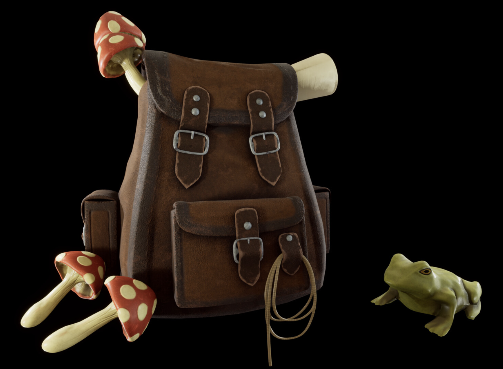

Based on a concept from Andy Bormin: https://www.artstation.com/artwork/A9eGEX. I first created the backpack in Blender and textured with a flat color palette. I then unwrapped the model and painted in Substance painter. I took the model into Zbrush to work in the finer details. I then baked and textured in Substance painter. Finishing with a render in Unreal Engine 5. I created the frog and mushroom from my own reference and started with Zbrush, exporting to blender to retopologize. I finished them with a bake and texturing in Substance painter and rendering in Unreal.